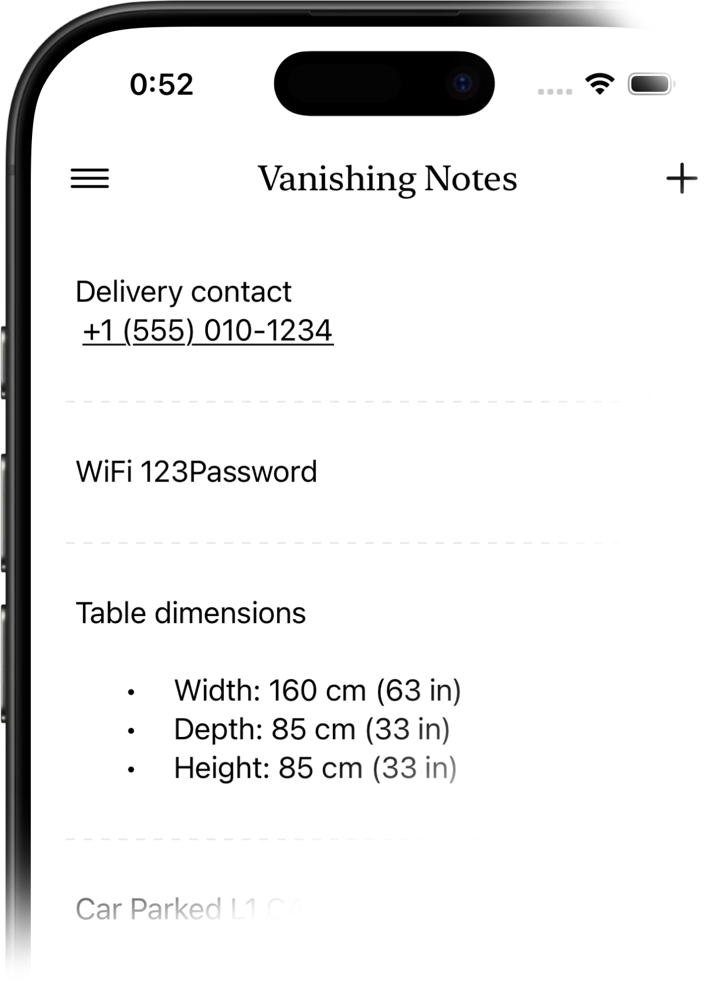
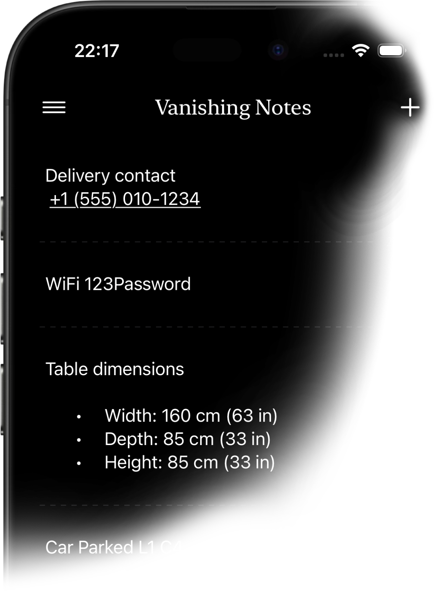
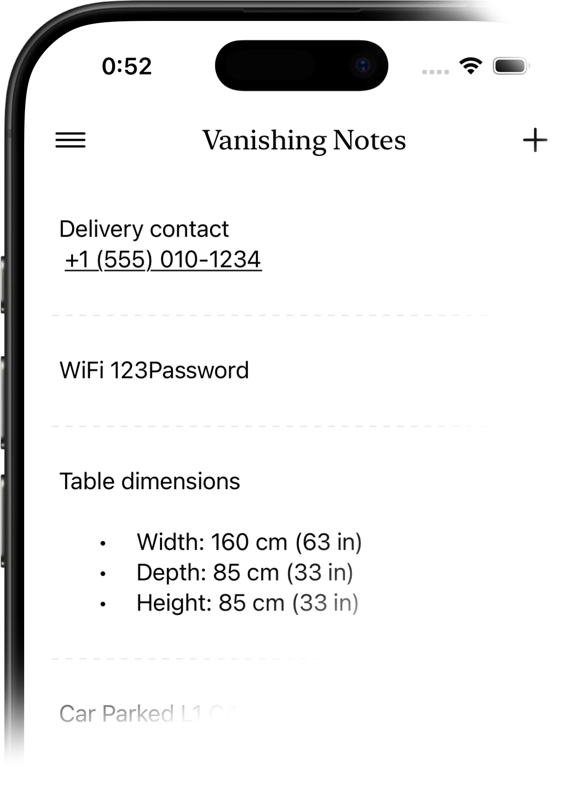
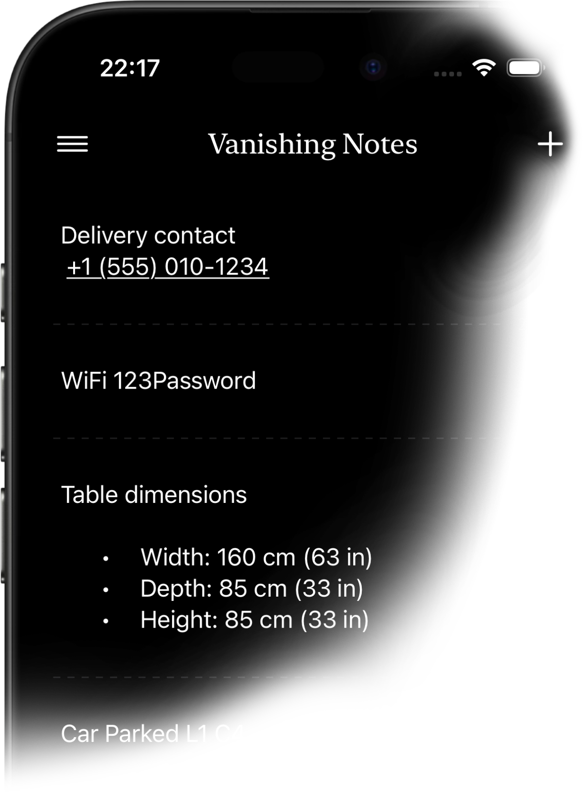

iPhone, iPad, and Mac. Your notes sync instantly across all your Apple devices.
Sync data to all your devices through iCloud, automate workflows using Shortcuts and use Siri to make actions with your voice
No one has access to your data except you. Not us, not even Apple. Your notes stay on-device and in your private iCloud.
Vanishing Notes uses your Apple Account and syncs encrypted data to all your devices using iCloud. No extra accounts needed.
No ads, no annoying prompts and upselling. Just a clean space to jot things down and let them go.
Vanishing Notes is a minimalist note-taking app where notes automatically disappear after a set time. It's perfect for temporary information you don't want cluttering your other apps.
When you create a note, you choose how long it lasts: 24 hours, 7 days, or 30 days. After that time, the note automatically expires and is removed from your active notes.
Yes, all your notes sync automatically across your devices using iCloud. Changes appear instantly on all your Apple devices.
Yes, you can create notes using Siri. Just say "Create a note in Vanishing Notes" and dictate your content.
Yes, Vanishing Notes supports Apple Shortcuts. You can create notes, find notes by content, and get recent notes. Open the Shortcuts app to explore available actions.
Go to Settings > Action Button on your iPhone, select Shortcut, then choose "Create Vanishing Note." Now you can create a new note instantly with a single press of the Action Button.
When you edit a note, its expiration timer resets. This ensures your note stays around as long as you're actively using it.
Yes, deleted notes move to trash where they stay for 30 days before permanent deletion. You can restore them from the trash at any time during this period.
Your notes are stored locally on your device and in your private iCloud account. No data is sent to third-party servers. Complete privacy.

 


